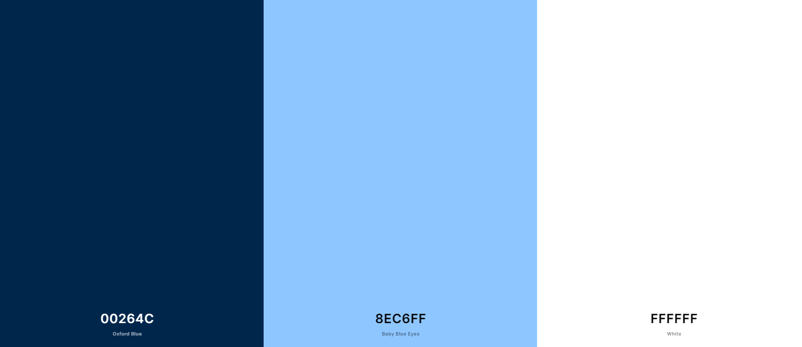

Climateize
Color Scheme
Color 1: Hex code #00264C. This will be used for the main color accents in the website.
Color 2: Hex code #8EC6FF. This will be used as a secondary color for other accents.
Color 3: White will be used as background in some cases to help contrast the other colors.